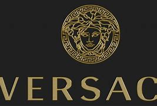
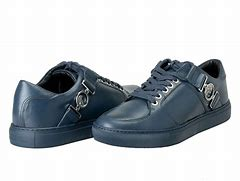
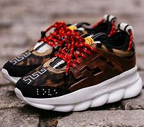
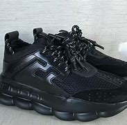
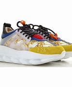
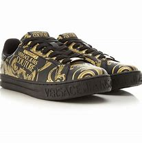
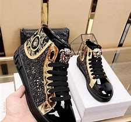

Gianni Versace S.r.l. (Italian pronunciation: [ˈdʒanni verˈsaːtʃe]), usually referred to as Versace (/vərˈsɑːtʃeɪ/ vər-SAH-chay),[a] is an Italian luxury fashion company founded by Gianni Versace in 1978.[7] The company produces Italian-made ready-to-wear and accessories, as well as haute couture under its Atelier Versace brand[8] and licenses its name and branding to Luxottica for eyewear.[9] Gianni Versace being a native of Calabria, in the ancient Magna Grecia (Greater Greece), the company logo is inspired by Medusa, a figure from Greek mythology.
       NEXT